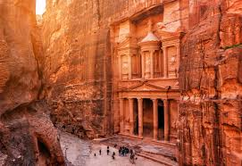

The city of Petra, capital of the Nabataean Arabs, is one of the most famous archaeological sites in the world, it is Located 240 km south of the capital Amman and 120 km north of the red sea town of Aqaba (see the Map), Petra the world wonder, is undoubtedly Jordan's most valuable treasure and greatest tourist attraction, and it is visited by tourists from all over the world.
